Importing libraries and the data set
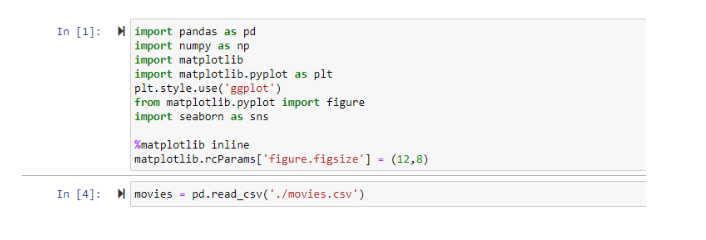
The dataset that I will be using is from kaggle in which there are a bunch of dataset that can be used in my data analysis journey. This data set will be used for me in order to find the correlation between the budget and the gross earnings. It is interesting for me to learn about how a budget can impact the income that will be generated once the movie goes into cinemas. What I did here first is get the data set from the folder in which I used the pandas library in order for it to help me visualize the data. The figure above shows the attributes and the data corresponding to it. In the next figures I will show how to check if there are any missing values in the data frame.
Checking for missing values
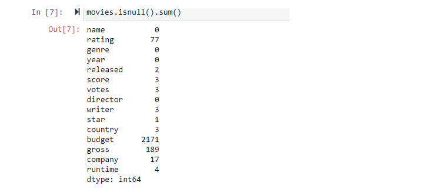
It shows here that some values are missing, I now have to drop all the values that are missing because it will affect the scatterplot that will be used later.
Dropping missing values
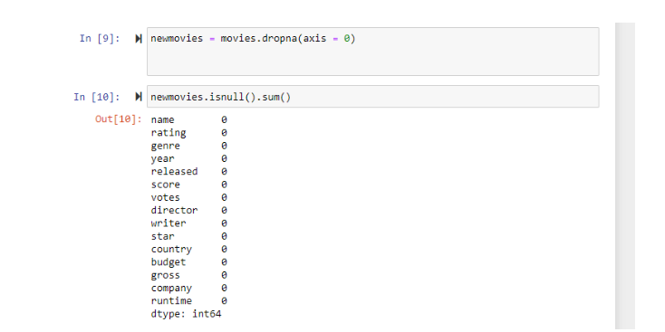
What I’ve done here next is to make the data frame drop the missing values by using the isnull() function by summing them. I am now confident that there will be no values missing. I can now proceed to data cleaning.
Scatter Plot
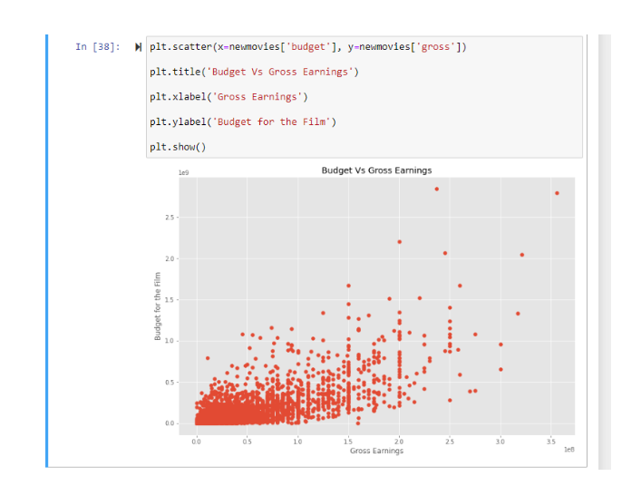
By using matplotlib I was able to visualize some data from the data frame, as you can see there is some correlation happening because it tends to be in an upward trend. In the next figure I will present it with a line using seaborn.
Putting a line on plot
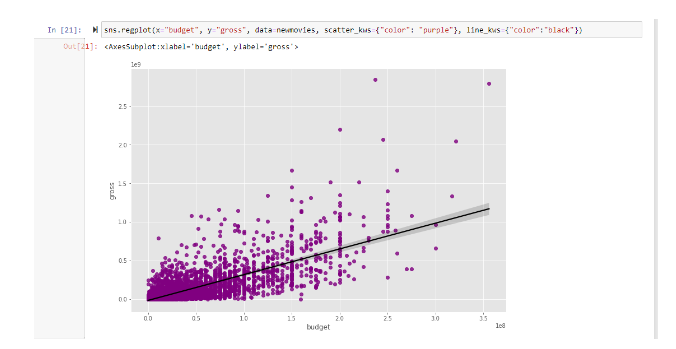
In here I used seaborn to plot it using scatter and then put in a line in order for me to see what trend it is going for. The result is a positive correlation.
Pearson Heatmap Correlation
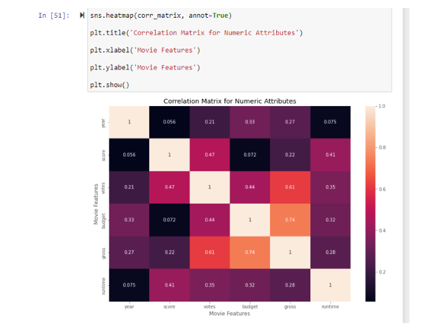
Here the data is more visualized and it says here that the brighter the colors are the higher correlation is between the values.
Sorted Correlation
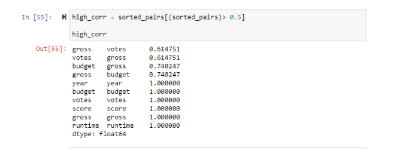
Here I’ve sorted them all and I can conclude that both votes and budget has a high correlation on gross earnings.
Checking for misspellings
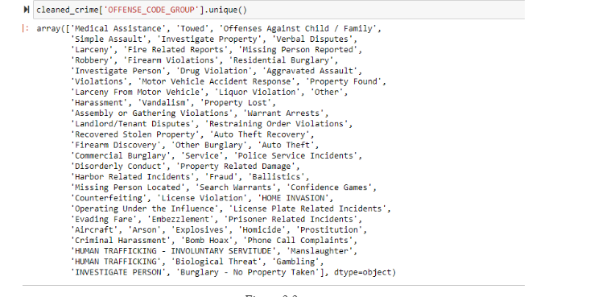
Another process of data cleaning is checking for misspellings, I did this by using the unique function as shown on figure 2.2. Since there are no misspellings the data is now ready to be presented.
Visualizing Qualitative Data
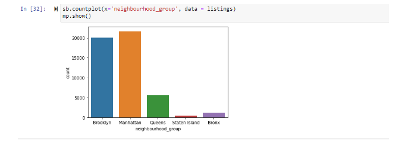
In this task, I have to show the data by using the libraries matplotlib and seaborn. Matplotlib is a library in python that can help visualize data. Seaborn is also a library that is derived from matplotlib but seaborn is multidimensional.In the figure above, I have to show the count of AirBnB listings from each neighborhood
HTML Parsing
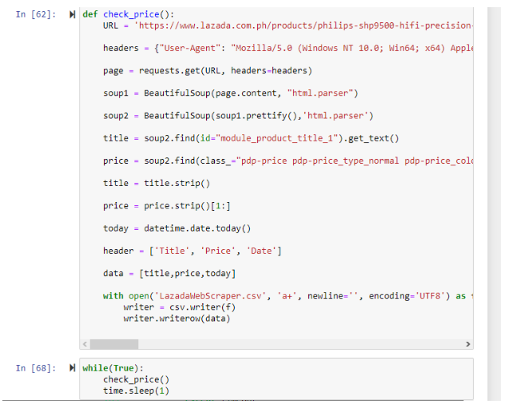
Here, I’ve automated the process by putting in a timer. To read a new one I just have to read the new data frame.
Reading Populated Data set
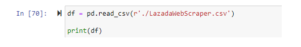
By doing this I can now see if that product changes its price by the timer ends, the limitation of this is that it is not running when the machine is turned off since it is not yet in the cloud.
Populated Data set
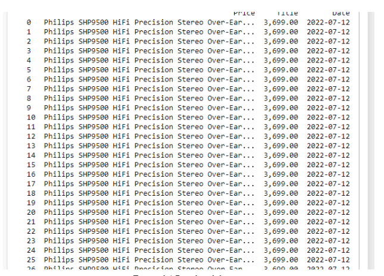
This is the sample result of it populating. This is only one product for now but all sections of the website can be scraped using the id elements of the web page.
Logistic Regression
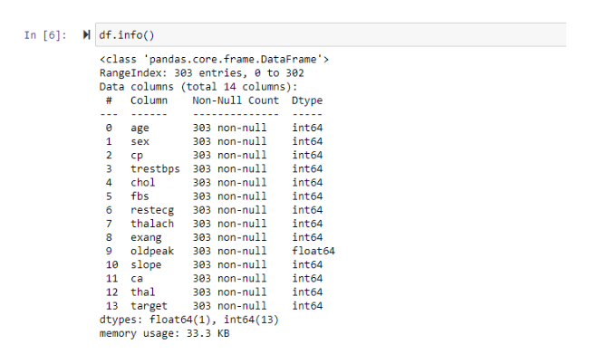
In order for me to perform logistic regression, the data set must be binary. It means that it will be answerable by yes and no. This data set came from kaggle and it contains the target attribute that says that if the result is 1 the heart is not healthy while having 0 means the heart is healthy. This data set will now be used on prediction using LogisticRegression
Splitting training and test data set
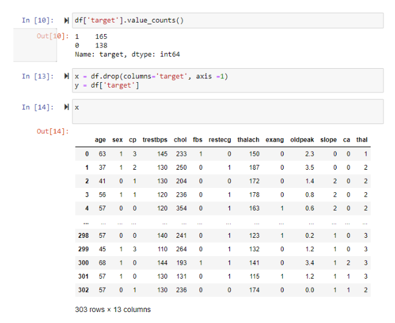
I have now separated the column target from the data set which means I can now split the data into training and test sets by using sklearn train_test_split().
Shaping the model
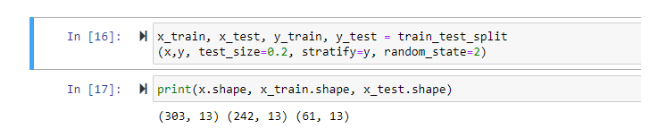
I now began to separate the test and the training values. According to the videos about machine learning you can split the data into two resulting in test and training whether it be 10% test data and 90% training data or 20% test data or 80% training data. In this case I’ve used the 80/20 principle. Now I can train the model using logistic regression
Logistic Regression Model
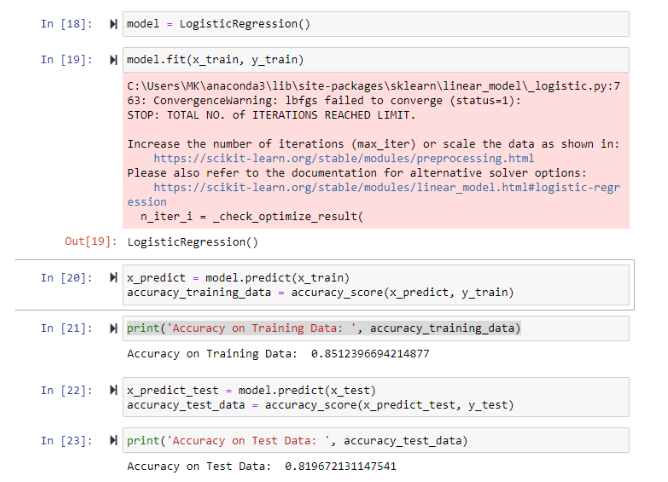
Here I've fitted the model, this will be the percentage of accuracy of the regression on the test and training data. On the training data I got 85% and on the test data I got almost 82%.
Predictive System
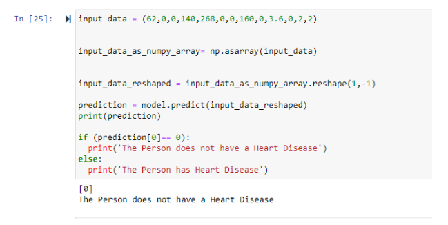
Here I copied one row from the csv file to see if the model is predicting correctly. In this case the row resulted in 0 which means the person is healthy and the predictive model also predicted that the person has a healthy heart.